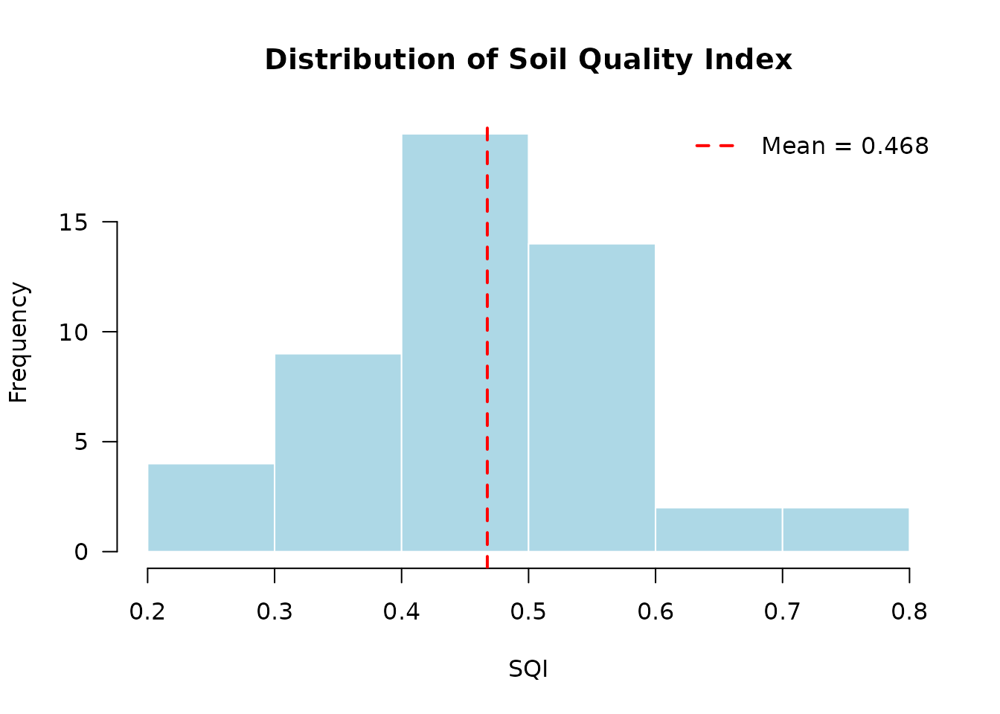
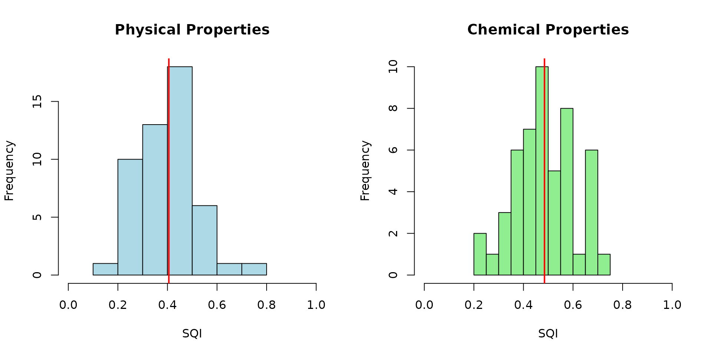
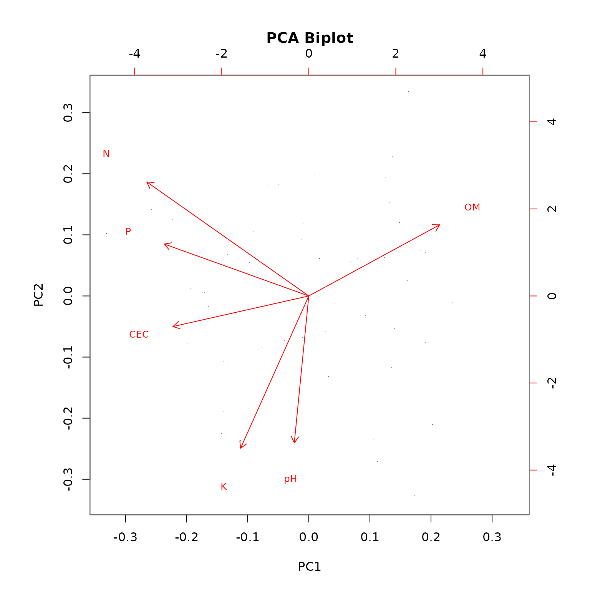

Advanced Usage
soilquality package
2025-12-26
Source:vignettes/advanced-usage.Rmd
advanced-usage.RmdIntroduction
This vignette covers advanced features of the soilquality package, including:
- Property selection strategies
- Custom scoring rules
- Creating and using AHP matrices
- Advanced visualization options
- Working with different data formats
library(soilquality)
data(soil_ucayali)Property Selection Strategies
Choosing the right soil properties is crucial for meaningful SQI calculation. The package offers several approaches.
Strategy 1: Use Pre-defined Property Sets
The package includes curated property sets for common scenarios:
# View available property sets
names(soil_property_sets)
#> [1] "basic" "standard" "comprehensive" "physical"
#> [5] "chemical" "fertility"
# Compare different property sets
result_basic <- compute_sqi_properties(
data = soil_ucayali,
properties = soil_property_sets$basic,
id_column = "SampleID"
)
# Use only fertility properties that exist in the dataset
fertility_available <- intersect(soil_property_sets$fertility,
names(soil_ucayali))
result_fertility <- compute_sqi_properties(
data = soil_ucayali,
properties = fertility_available,
id_column = "SampleID"
)
# Compare mean SQI values
cat("Basic properties - Mean SQI:",
round(mean(result_basic$results$SQI), 3), "\n")
#> Basic properties - Mean SQI: 0.49
cat("Fertility properties - Mean SQI:",
round(mean(result_fertility$results$SQI), 3), "\n")
#> Fertility properties - Mean SQI: 0.508Strategy 2: Domain-Specific Selection
Select properties based on your research question or management goal:
# For erosion risk assessment - focus on physical properties
erosion_props <- c("Sand", "Silt", "Clay", "BD", "OM")
result_erosion <- compute_sqi_properties(
data = soil_ucayali,
properties = erosion_props,
id_column = "SampleID"
)
# For nutrient management - focus on fertility
nutrient_props <- c("pH", "OM", "N", "P", "K", "CEC")
result_nutrient <- compute_sqi_properties(
data = soil_ucayali,
properties = nutrient_props,
id_column = "SampleID"
)
# Compare selected MDS
cat("Erosion assessment MDS:", paste(result_erosion$mds, collapse = ", "), "\n")
#> Erosion assessment MDS: Sand, Clay, BD, OM
cat("Nutrient management MDS:", paste(result_nutrient$mds, collapse = ", "), "\n")
#> Nutrient management MDS: N, K, P, pH, OMStrategy 3: Data-Driven Selection
Let PCA automatically select the most informative properties:
# Use all available numeric properties
all_numeric <- names(soil_ucayali)[sapply(soil_ucayali, is.numeric)]
result_all <- compute_sqi_properties(
data = soil_ucayali,
properties = all_numeric,
id_column = "SampleID"
)
# See which properties were selected by PCA
cat("PCA selected:", length(result_all$mds), "indicators from",
length(all_numeric), "properties\n")
#> PCA selected: 8 indicators from 14 properties
print(result_all$mds)
#> [1] "Sand" "Silt" "Ca" "SOC" "OM" "pH" "Mg" "P"Strategy 4: Correlation-Based Pre-screening
Remove highly correlated properties before analysis:
# Calculate correlation matrix
numeric_data <- soil_ucayali[, sapply(soil_ucayali, is.numeric)]
cor_matrix <- cor(numeric_data, use = "complete.obs")
# Find highly correlated pairs (|r| > 0.9)
high_cor <- which(abs(cor_matrix) > 0.9 & cor_matrix < 1, arr.ind = TRUE)
if (nrow(high_cor) > 0) {
cat("Highly correlated property pairs:\n")
for (i in 1:nrow(high_cor)) {
if (high_cor[i, 1] < high_cor[i, 2]) { # Avoid duplicates
cat(sprintf(" %s - %s: r = %.3f\n",
rownames(cor_matrix)[high_cor[i, 1]],
colnames(cor_matrix)[high_cor[i, 2]],
cor_matrix[high_cor[i, 1], high_cor[i, 2]]))
}
}
}
# Remove one from each highly correlated pair
# For example, keep SOC but remove OM (they're highly correlated)
reduced_props <- setdiff(all_numeric, c("OM"))
result_reduced <- compute_sqi_properties(
data = soil_ucayali,
properties = reduced_props,
id_column = "SampleID"
)Custom Scoring Rules
The package provides flexible scoring functions to match different soil property behaviors.
Higher is Better
For properties where higher values indicate better soil quality:
# Organic matter, nutrients, CEC
scoring_rules <- list(
OM = higher_better(),
N = higher_better(),
P = higher_better(),
K = higher_better(),
CEC = higher_better()
)
result_higher <- compute_sqi_properties(
data = soil_ucayali,
properties = names(scoring_rules),
scoring_rules = scoring_rules,
id_column = "SampleID"
)Lower is Better
For properties where lower values indicate better soil quality:
# Bulk density, electrical conductivity
scoring_rules_lower <- list(
BD = lower_better(),
EC = lower_better()
)
result_lower <- compute_sqi_properties(
data = soil_ucayali,
properties = names(scoring_rules_lower),
scoring_rules = scoring_rules_lower,
id_column = "SampleID"
)Optimum Range
For properties with an ideal target value:
# pH has an optimal range around neutral
scoring_rules_opt <- list(
pH = optimum_range(optimal = 6.5, tolerance = 1.5),
Sand = higher_better(),
Clay = higher_better(),
OM = higher_better()
)
result_opt <- compute_sqi_properties(
data = soil_ucayali,
properties = names(scoring_rules_opt),
scoring_rules = scoring_rules_opt,
id_column = "SampleID"
)
# Compare pH scoring with different optimal values
result_opt_7 <- compute_sqi_properties(
data = soil_ucayali,
properties = c("pH", "OM", "N", "P"),
scoring_rules = list(
pH = optimum_range(optimal = 7.0, tolerance = 1.0),
OM = higher_better(),
N = higher_better(),
P = higher_better()
),
id_column = "SampleID"
)
cat("Mean SQI with pH optimum 6.5:",
round(mean(result_opt$results$SQI), 3), "\n")
#> Mean SQI with pH optimum 6.5: 0.395
cat("Mean SQI with pH optimum 7.0:",
round(mean(result_opt_7$results$SQI), 3), "\n")
#> Mean SQI with pH optimum 7.0: 0.336Threshold-Based Scoring
For properties with specific threshold values:
# Example: P availability with agronomic thresholds
# Low: <10, Medium: 10-20, High: 20-40, Very High: >40
scoring_rules_thresh <- list(
P = threshold_scoring(
thresholds = c(0, 10, 20, 40, 100),
scores = c(0, 0.4, 0.7, 1.0, 1.0)
),
K = threshold_scoring(
thresholds = c(0, 50, 100, 200, 500),
scores = c(0, 0.4, 0.7, 1.0, 1.0)
),
OM = higher_better(),
pH = optimum_range(optimal = 6.5, tolerance = 1.5)
)
result_thresh <- compute_sqi_properties(
data = soil_ucayali,
properties = names(scoring_rules_thresh),
scoring_rules = scoring_rules_thresh,
id_column = "SampleID"
)Mixed Scoring Strategies
Combine different scoring approaches for comprehensive assessment:
# Realistic scoring for tropical agricultural soils
tropical_scoring <- list(
pH = optimum_range(optimal = 6.0, tolerance = 1.5),
OM = higher_better(),
SOC = higher_better(),
N = higher_better(),
P = threshold_scoring(
thresholds = c(0, 8, 15, 30, 100),
scores = c(0.2, 0.5, 0.8, 1.0, 1.0)
),
K = threshold_scoring(
thresholds = c(0, 60, 120, 200, 500),
scores = c(0.2, 0.5, 0.8, 1.0, 1.0)
),
CEC = higher_better(),
BD = lower_better(),
EC = lower_better()
)
result_tropical <- compute_sqi_properties(
data = soil_ucayali,
properties = names(tropical_scoring),
scoring_rules = tropical_scoring,
id_column = "SampleID"
)
cat("Tropical scoring - Mean SQI:",
round(mean(result_tropical$results$SQI), 3), "\n")
#> Tropical scoring - Mean SQI: 0.493Creating AHP Matrices
The Analytic Hierarchy Process (AHP) allows expert-based weighting of indicators.
Method 1: Interactive Creation
Create a pairwise comparison matrix interactively:
# This will prompt you for pairwise comparisons
indicators <- c("pH", "OM", "P", "K")
ahp_matrix <- create_ahp_matrix(indicators, mode = "interactive")
# Use the AHP matrix in SQI calculation
result_ahp <- compute_sqi_properties(
data = soil_ucayali,
properties = indicators,
pairwise_matrix = ahp_matrix$matrix,
id_column = "SampleID"
)Method 2: Manual Matrix Creation
Create a pairwise comparison matrix manually:
# Define indicators
indicators <- c("pH", "OM", "N", "P")
# Create pairwise comparison matrix
# Rows are compared to columns
# Values: 1=Equal, 3=Moderate, 5=Strong, 7=Very Strong, 9=Extreme
pairwise <- matrix(c(
1, 1/3, 1/5, 1/3, # pH compared to others
3, 1, 1/3, 1, # OM compared to others
5, 3, 1, 3, # N compared to others
3, 1, 1/3, 1 # P compared to others
), nrow = 4, byrow = TRUE)
colnames(pairwise) <- rownames(pairwise) <- indicators
# Calculate weights
ahp_result <- ahp_weights(pairwise, indicators = indicators)
cat("Indicator weights:\n")
#> Indicator weights:
print(round(ahp_result$weights, 3))
#> pH OM N P
#> 0.078 0.200 0.522 0.200
cat("\nConsistency Ratio:", round(ahp_result$CR, 4), "\n")
#>
#> Consistency Ratio: 0.0161
# Note: To use AHP weights in SQI calculation, the pairwise matrix must match
# the MDS indicators selected by PCA. For this example, we'll calculate SQI
# with equal weights and show the AHP weights separately.
result_manual_ahp <- compute_sqi_properties(
data = soil_ucayali,
properties = indicators,
id_column = "SampleID"
)
cat("\nMDS indicators selected by PCA:", paste(result_manual_ahp$mds, collapse = ", "), "\n")
#>
#> MDS indicators selected by PCA: N, pH, OMMethod 3: Importance Ratios
Use relative importance ratios (simpler than full pairwise matrix):
# Specify relative importance (e.g., N is 3x more important than pH)
indicators <- c("pH", "OM", "N", "P")
importance_ratios <- c(1, 2, 3, 2) # Relative importance
# Convert to pairwise matrix
pairwise_from_ratios <- ratio_to_saaty(importance_ratios)
colnames(pairwise_from_ratios) <- rownames(pairwise_from_ratios) <- indicators
# Calculate weights
ahp_from_ratios <- ahp_weights(pairwise_from_ratios, indicators = indicators)
cat("Weights from importance ratios:\n")
#> Weights from importance ratios:
print(round(ahp_from_ratios$weights, 3))
#> pH OM N P
#> 0.125 0.250 0.375 0.250Advanced Visualization
Customizing Plot Appearance
# Calculate SQI for visualization examples
result_viz <- compute_sqi_properties(
data = soil_ucayali,
properties = c("pH", "OM", "N", "P", "K", "CEC"),
id_column = "SampleID"
)
# Distribution plot
plot(result_viz, type = "distribution")
Comparing Multiple Scenarios
# Calculate SQI with different property sets
result_physical <- compute_sqi_properties(
data = soil_ucayali,
properties = soil_property_sets$physical,
id_column = "SampleID"
)
# Use only chemical properties that exist in the dataset
chemical_available <- intersect(soil_property_sets$chemical,
names(soil_ucayali))
result_chemical <- compute_sqi_properties(
data = soil_ucayali,
properties = chemical_available,
id_column = "SampleID"
)
# Compare distributions
par(mfrow = c(1, 2))
hist(result_physical$results$SQI,
main = "Physical Properties",
xlab = "SQI", col = "lightblue", xlim = c(0, 1))
abline(v = mean(result_physical$results$SQI), col = "red", lwd = 2)
hist(result_chemical$results$SQI,
main = "Chemical Properties",
xlab = "SQI", col = "lightgreen", xlim = c(0, 1))
abline(v = mean(result_chemical$results$SQI), col = "red", lwd = 2)
PCA Biplot
Visualize relationships between samples and variables:
plot(result_viz, type = "biplot")
Indicator Contribution Analysis
Identify which indicators contribute most to SQI variation:
# Extract scored indicators and weights
scored_data <- result_viz$results[, paste0(result_viz$mds, "_scored")]
weights <- result_viz$weights
# Calculate weighted contribution of each indicator
contributions <- sweep(scored_data, 2, weights, "*")
# Plot contributions
boxplot(contributions,
main = "Weighted Indicator Contributions to SQI",
ylab = "Weighted Score",
las = 2,
col = rainbow(length(result_viz$mds)))Working with Different Data Formats
File-Based Workflow
# Save data to CSV
write.csv(soil_ucayali, "soil_data.csv", row.names = FALSE)
# Calculate SQI from file
result_from_file <- compute_sqi(
input_csv = "soil_data.csv",
id_column = "SampleID",
output_csv = "sqi_results.csv"
)
# Results are automatically saved to output_csvData Frame Workflow
# Work directly with data frames (no file I/O)
result_df <- compute_sqi_df(
df = soil_ucayali,
id_column = "SampleID"
)
# Extract results
sqi_values <- result_df$results$SQI
names(sqi_values) <- result_df$results$SampleID
# View top 5 samples by SQI
head(sort(sqi_values, decreasing = TRUE), 5)
#> UCY043 UCY005 UCY001 UCY050 UCY045
#> 0.6927483 0.6061193 0.5852834 0.5773329 0.5691887Batch Processing Multiple Datasets
# Process multiple sites or time points
sites <- c("site1.csv", "site2.csv", "site3.csv")
results_list <- lapply(sites, function(site) {
compute_sqi(
input_csv = site,
id_column = "SampleID",
properties = soil_property_sets$standard
)
})
# Compare mean SQI across sites
mean_sqi <- sapply(results_list, function(r) mean(r$results$SQI))
names(mean_sqi) <- sites
print(mean_sqi)Best Practices
1. Property Selection
- Use at least 5-6 properties for robust PCA
- Include properties from different categories (physical, chemical, biological)
- Avoid highly correlated properties (|r| > 0.9)
- Match properties to your management objectives
2. Scoring Rules
- Use domain knowledge to select appropriate scoring functions
- Validate scoring rules with local experts or literature
- Consider regional differences in optimal values
- Document your scoring rationale
Summary
This vignette demonstrated advanced features including:
- Multiple property selection strategies
- Custom scoring rules for different property behaviors
- Creating AHP matrices for expert-based weighting
- Advanced visualization and comparison techniques
- Different data workflow options
For more information on AHP methodology, see
vignette("ahp-matrices").
References
Karlen, D. L., Mausbach, M. J., Doran, J. W., Cline, R. G., Harris, R. F., & Schuman, G. E. (1997). Soil quality: A concept, definition, and framework for evaluation. Soil Science Society of America Journal, 61(1), 4-10.
Qi, Y., Darilek, J. L., Huang, B., Zhao, Y., Sun, W., & Gu, Z. (2009). Evaluating soil quality indices in an agricultural region of Jiangsu Province, China. Geoderma, 149(3-4), 325-334.